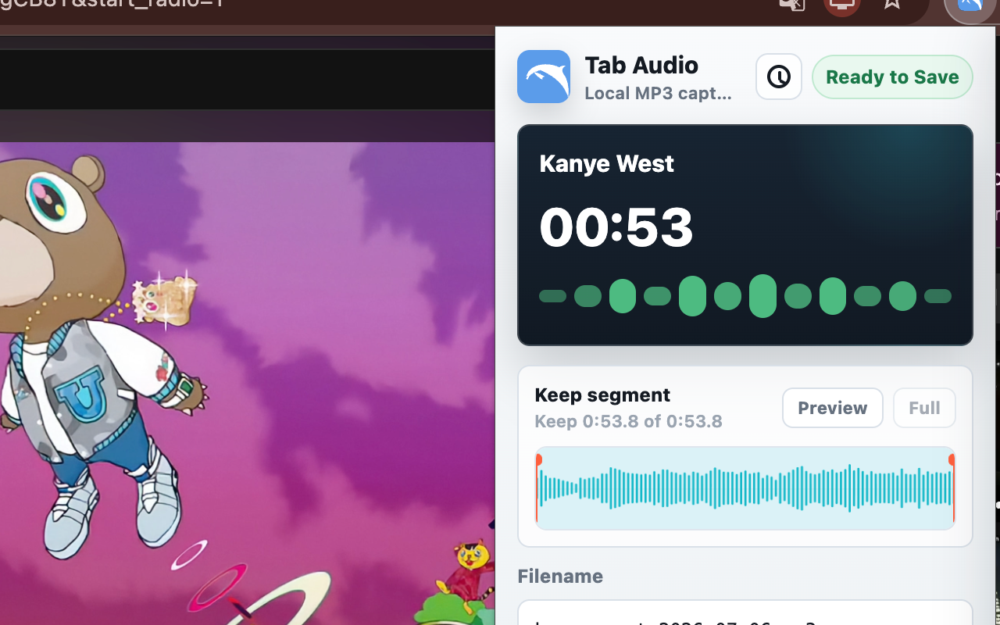

Good fit
Lectures, webinars, podcasts, interviews, web players, and other audible content in one Chrome tab.
Browser audio to MP3
Record sound from the active Chrome tab, check the result, trim away extra playback, and download a local MP3 without recording your screen.
Local recording. No uploads.

Quick answer
Saving browser audio as MP3 is different from downloading an existing media file. A tab recorder captures the sound produced by the active Chrome tab while it plays, then encodes that recording as a new MP3.
Dolphin is designed for this focused workflow. It records one active tab, does not capture the screen or microphone, and lets you trim the result before the local download.
Lectures, webinars, podcasts, interviews, web players, and other audible content in one Chrome tab.
If the publisher provides an official audio download, use it because it preserves the original file.
Choose a screen recorder for video, a microphone recorder for your voice, or a system recorder for multiple apps.
Steps
Play the website, lecture, webinar, podcast, or web player audio in a Chrome tab.
Listen briefly and check that the Chrome tab and website player are not muted.
Open the extension while the audio tab is active, then start the current-tab recording.
Avoid muting, reloading, or replacing the source tab while the recording is running.
Stop after the useful part, then remove silence, intros, or extra playback from the start and end.
Preview the kept segment, use a clear filename, and save the finished file through Chrome downloads.
Before recording
A browser recorder can only capture the source that Chrome makes available. Check the basics before a long session instead of discovering silence or interruptions at the end.
Start Dolphin while the exact tab playing the audio is active.
Confirm both the tab speaker control and the website player are unmuted.
Let the media load and close prompts that could pause playback before recording.
Record a brief sample first when the source is important or the session will be long.
Why MP3
MP3 is a compressed audio format with broad support across phones, computers, note apps, and media players. It is practical for lectures, interviews, spoken reference clips, and offline review.
WAV is usually better when an uncompressed source is required for production editing, but the files are much larger. The current Dolphin release exports MP3 rather than WAV.
Best for smaller files, sharing, offline listening, lecture review, and everyday browser audio capture.
Current Dolphin export formatBest for editing workflows and uncompressed audio, but larger and not included in the current release.
Not available yetCleaner output
The quality of a tab recording depends first on the source playback. A low-volume, interrupted, or distorted stream cannot be restored simply by exporting it as MP3.
Dolphin shows a waveform after recording so you can keep the useful range and remove setup time or unwanted playback before the file is saved.
Use the waveform to see where the audio starts and ends.
Check the kept part before saving the MP3.
Remove silence, countdowns, intros, or playback that continued after the useful part.
Name the file by topic, source, or date so it is easy to find later.
Troubleshooting
If the saved MP3 is silent or shorter than expected, check the capture source before repeating the full recording.
Verify that the correct tab was active, the tab was audible, and the website player was not muted.
Keep Chrome open and avoid closing, replacing, or reloading the source tab during capture.
Some DRM or protected playback may not be exposed to Chrome tab capture.
Dolphin records one active tab, not your microphone, every tab, or all desktop applications.
Limits and rights
A tab recorder does not override website permissions, subscriptions, DRM, or copyright rules. Some protected streams may be unavailable even when you can hear them in Chrome.
Use Dolphin for your own content, permitted recordings, personal notes, or material whose owner allows capture. Do not redistribute recordings unless you have the necessary rights and consent.
Privacy
Dolphin records and encodes browser audio locally in Chrome. The extension downloads the finished MP3 to your device and does not upload the recording.
Read the privacy detailsRelated guide
If you are still choosing the right source tab or troubleshooting silent recordings, start with the tab audio recorder guide.
Read the tab audio recorder guideRelated guide
The website audio guide explains when to use a direct download, a tab recorder, a screen recorder, or a desktop system-audio tool.
Read the website audio recording guideInternal audio guide
The internal audio guide explains active-tab capture, how it differs from system audio, and why a recording may be silent.
Read the Chrome internal audio guideReady to record Chrome tab audio?
FAQ
Open the audio in a Chrome tab, confirm the tab is audible, start Dolphin on that tab, stop when finished, trim the waveform, preview the kept segment, and download the MP3.
No. The current release focuses on MP3 export.
You can trim the start and end of the recording and preview the kept segment before downloading the MP3. Dolphin is not a multitrack audio editor.
No. Dolphin processes recordings locally in Chrome and saves the MP3 to your device.
Some protected or DRM-based content may not be available to browser tab capture. Always record audio you have the right to capture.
The wrong tab may have been active, the Chrome tab or website player may have been muted, or the source may have been protected or reloaded during recording.
No. Dolphin records audio from the active Chrome tab and does not create a screen recording or video file.
No. Dolphin records the active Chrome tab after you start recording. It is not a full browser or system audio mixer.